AN/APR-25 Radar Homing and Warning Receiver
Introduction
The AN/APR-25 is a Radar Warning and Homing Receiver. This is a piece of equipment which is designed to detect incoming radar and guidance signals and inform the pilot of any threats.
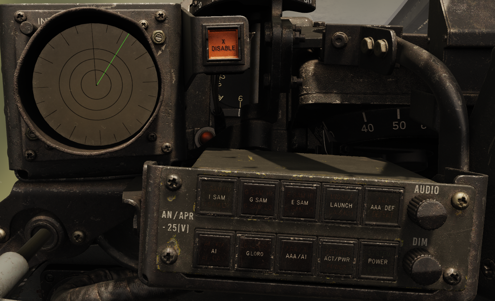
Theory of Operation
Theory of Radar
To understand the AN/APR-25 theory of operation it is important to understand the basics of radar.
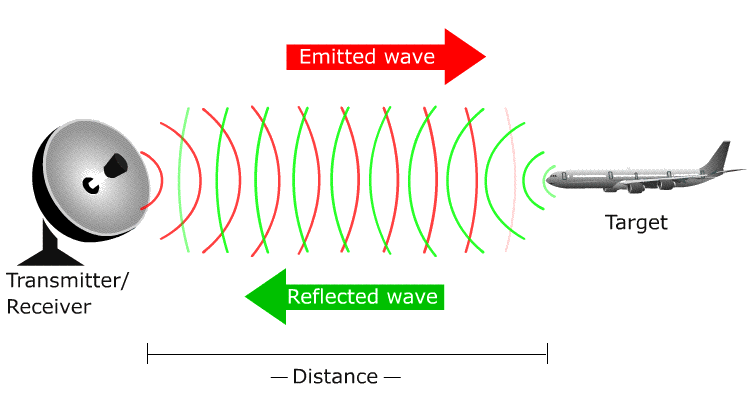
The principle operation of radar is to send out a small burst of radiation (usually microwaves) in a direction and measure the time it takes to receive any reflected radiation. The speed of the radiation is known so the time can be used to estimate the distance to whatever reflected the radiation.
Carrier Frequency (Band)
The carrier frequency is the frequency of the radiation used for detection of objects. Each pulse contains a burst of these radiation at the carrier frequency.
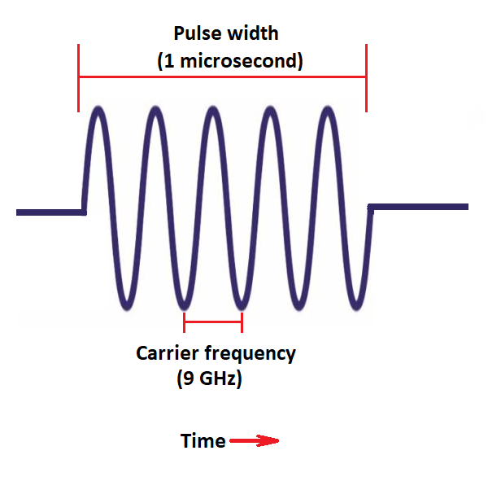
The carrier frequency can be broadly categorized into bands. The bands for the AN/APR-25 are listed below (note these are similar to NATO bands but not exactly identical):
| BAND | Frequency (GHz) |
|---|---|
| India | 7 - 11 |
| Golf | 4.4 - 5.8 |
| Echo | 2.4 - 3.6 |
Whenever radar is referred to be in any of these bands it simply means that the radiation it emits falls within the limits of the band.
Broadly different radars fall into different bands, Early Fan-Song (A etc) (SA-2) fall into the Echo band, later Fan-Song E (SA-2) falls into the Golf band.
Fighter radars are found in the India band (with a few ranging radar exceptions in the Echo band). Golf and Echo radars tend to be search or fire control radars radars. There are no hard rules though as it depends on each weapon system which band it falls in.
Pulse Repetition Frequency (PRF)
It is not enough to send one pulse of radiation as the energy contained within one pulse is very small so it can be difficult to detect. To improve this and to continually update what the radar is detecting the radar will send a stream of pulses. The rate at which these pulses are transmitted is known as the pulse repetition frequency.
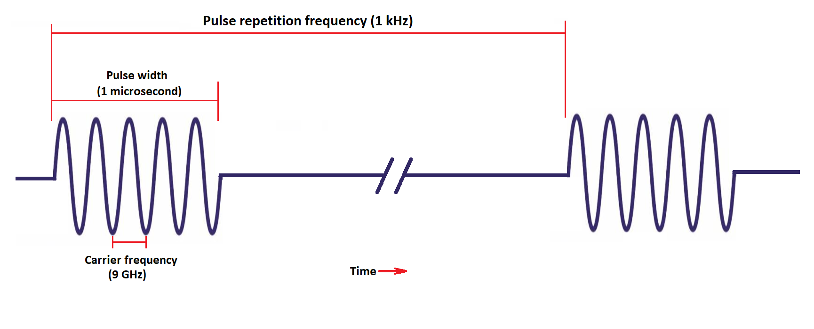
Below the various types of pulse repetition frequency are described.
| Category | Pulse Repetition Frequency Range (kHz) | Description |
|---|---|---|
| HIGH | 30 - 300+ | Primarily used in pulse doppler radars. Older pulse doppler radars only have high pulse repetition frequency modes. These saturate the AN/APR-25 and give a constant tone at the maximum frequency the AN/APR-25 audio generator can create. |
| MEDIUM | 3 - 30 | Used in modern pulse doppler radars. Medium pulse repetition frequencies are modulated this means the pulse repetition frequency is quickly varied giving them complex patterns. This can give complex digital sounding tones from the audio generator of the AN/APR-25. |
| LOW | <3 | Used in older pulse and moving target indicator radars. This frequency is also commonly used for ground mapping radars. Older radars use something called pulse repetition frequency jittering to reduce un-wanted clutter, this jitter is the random changing of the pulse repetition frequency and can result in a buzzing sound being heard in the AN/APR-25 audio. |
The AN/APR-25 was only designed to deal with Low Pulse Repetition Frequency threats and thus only these can be correctly categorized. However because of the multiple frequencies used in medium pulse repetition frequency beat frequencies are created which can be heard in the low pulse repetition frequency range. High pulse repetition frequency radars have no such complexity and therefore they simply max the frequency of the AN/APR-25 audio generator.
Equipment
Antennas
The AN/APR-25 uses four antennas to detect incoming radiation. There are two antennas on the nose to detect incoming radiation from the front half and two antennas on the tail to detect incoming radiation from the rear half.
The four antennas are angled at 45 degrees.
There are two antennas on the nose:
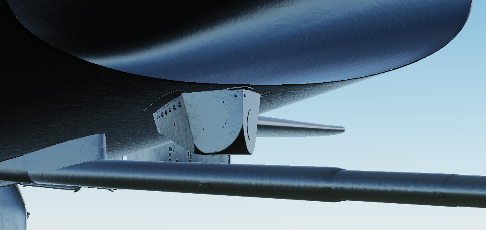
and two antennas on the tail:
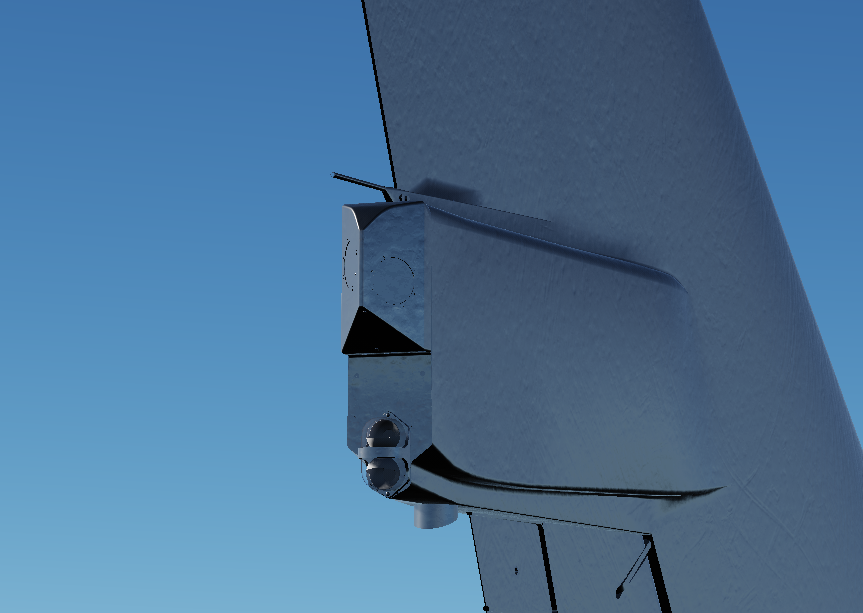
Each antenna covers approximately a 90 degree cone. The relative strength between the antennas can be used to determine threat detection. Due to the antennas being fixed to the aircraft as the aircraft rolls and pitches the relative direction of the radiation will change and the apparent azimuth on the scope will change also.
Amplifiers
Each antenna routes to three amplifiers - one for each band that the AN/APR-25 can detect. The amplifiers increase the signal to a usable level so it can be passed to the logic analyzer.
Logic Analyzers
There is a logic analyzer for each band. In general the logic analyzers have complex circuitry to measure characteristics about the incoming signals.
The primary characteristics which can be measured are the pulse repetition frequency and the scan pattern of the incoming signals. If the pulse repetition frequency and scan pattern match that of the threat on this band then the respective light is triggered on the billboard.
Audio Generator
The pulses from the amplifiers are directly translated to audio. This can result in a noisy environment when there are lots of radars operating - although the x band disable and aaa defeat can both be used to reduce unwanted threat indications and their respective audio.
Controls and Indicators
The RHAW Set has three main parts. The azimuth indicator which displays incoming signals and their directions and the x band disable switch and billboard which are both used to control
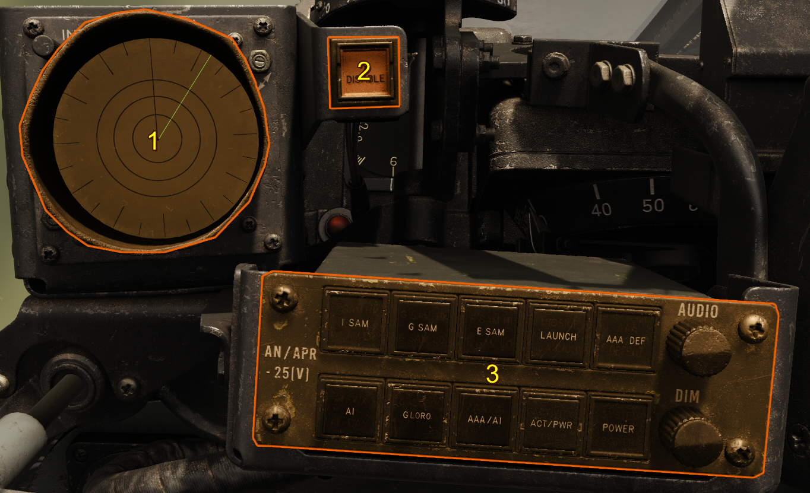
Billboard
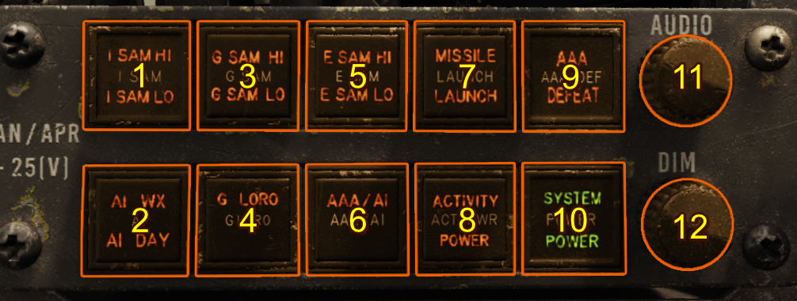
- India SAM Indication/Button
- AI Indication
- Golf SAM Indication/Button
- Golf SAM Lobe-on-receive-only (LORO) Indication/Button
- Echo SAM Indication/Button
- AAA/AI Indication/Button
- Launch Indication
- Activity Indication
- AAA Defeat Indication/Button
- Power Indication/Button
- Audio Volume Knob
- Brightness Dimmer Knob
POWER
This button switches the system on, it can take approximately 10-30 seconds (check) for the system to warm up.
Band Indications (India,Golf,Echo)
The threat indications are split into three bands India, Golf and Echo. For each band there are two buttons and on each button there are up to two lights.
The upper buttons/lights correspond to known surface to air missile system radars, the bottom buttons/lights correspond to other threats in the same band.
Each threat indicated for each band are listed below.
| Band | Upper Button | Lower Button | Upper Button Threat | Lower Button Threats |
|---|---|---|---|---|
| India | I SAM | AI | Low Blow (SA-3) | AI WX (All weather interceptors - with conical scanning radars) and AI DAY (Day interceptors with range only radars) |
| Golf | G SAM | G LORO | Fan-Song E (SA-2) | Fan-Song E (SA-2) in lobe on receive only (LORO) mode |
| Echo | E SAM | AAA/AI | Fan-Song (A-D) (SA-2) | Anti-Aircraft-Artillery or E band range only air interceptors |
For a more detailed description of each threat indicator see below.
Upper Buttons/Indicators
The surface to air missile system threat indications are in the form of two lights on the button, one at the top and one at the bottom. The top light indicates a high pulse repetition frequency for the given threat and the bottom light indicates the low pulse repetition frequency.
As a general rule low pulse repetition frequency is used for acquisition or long range tracking and high pulse repetition frequency is used for shorter range targeting and launch.
Each threat indication is displayed when a radar is detected which matches the pulse repetition frequency of the threat's high or low setting. However other radars can erroneously trigger the threat detection if their pulse repetition frequency coincides with the thread frequencies or the system is overwhelmed with many simultaneous signals.
Pressing these buttons begin their corresponding built in test.
Note
Currently the Echo Band Fan-Song is not present in the game as such any Echo band threat indications are erroneous.
Lower Buttons/Indicators
AAA/AI (Anti Aircraft Artillery / Air Intercept)
This light illuminates when the lower half of the Echo band is triggered, this usually indicates Anti-Aircraft Artillery Fire Control Radars or E Band Airborne Intercept Radars.
G LORO
Usually the Fan-Song scans its beam left to right 16 times per second giving the characteristic rattlesnake sound. However this can be easily tracked and emulated by jamming equipment to confuse the tracking circuits. To counter this the Fan-Song operator can switch to Lobe-On-Receive-Only which changes the beam to be stationary and scans only in the receiving antennas. This way it is more difficult for jammers to track the scanning motion of the Fan-Song.
This light illuminates when the Fan-Song E (Golf Band Fan-Song) switches to its Lobe-On-Receive-Only mode, which results in the sound switching from the characteristic rattle-snake sound to a steady tone.
Pressing this button begins the Golf Band LORO build-in-test.
AI (Air Intercept)
This indicates if there is an India band airborne intercept radar detected and what type the system has categorized.
AI WX - This illuminates when a radar with a conical scanning type radar is detected. This is usually indicative of an all weather fighter.
AI DAY - This is supposed to represent day fighters with range only radars, like that the of the Super Sabre's Radar. However this RHAW equipment was invented before the widespread use of monopulse radars as such these more advanced radars do not trip the AI WX detection circuitry leading them to be incorrectly classified as AI DAY fighters despite having much more advanced radars capable of all weather intercept.
ACT/PWR (Activity/Power)
This indicates if there are any Charlie band signals detected which match that of a Fan-Song emitting guidance signals. If there is a correlated fan-song on the Azimuth Display the correlated signal will flash at 3 Hz along with the launch light illuminating.
LAUNCH
The launch indication is given when Charlie band launch and guidance activity is detected
AAA Defeat
This button blanks out the lower half of the Echo band effectively disabling Anti-Aircraft Artillery Radars commonly found in this band. With dense enough signal environment this circuitry can be tripped off resulting in the display of AAA signals despite the AAA Defeat being activated.
The corresponding light on the button indicates whether AAA Defeat is requested.
Audio Knob
Sets the volume of the audio produced by the AN/APR-25
Brightness Knob
Sets the brightness of the indications on the billboard.
X Band Disable Button
The X Band Disable Button triggers the India band disable circuitry. This allows the operator to remove all indications of the india band from the scope.
To re-enable the band simply press the button again. While the band is disabled the light on the button will illuminate.
Azimuth Indicator
The azimuth indicator is the primary display of the AN/APR-25 and it indicates different threats to the pilot their relative strength and their incoming azimuth.
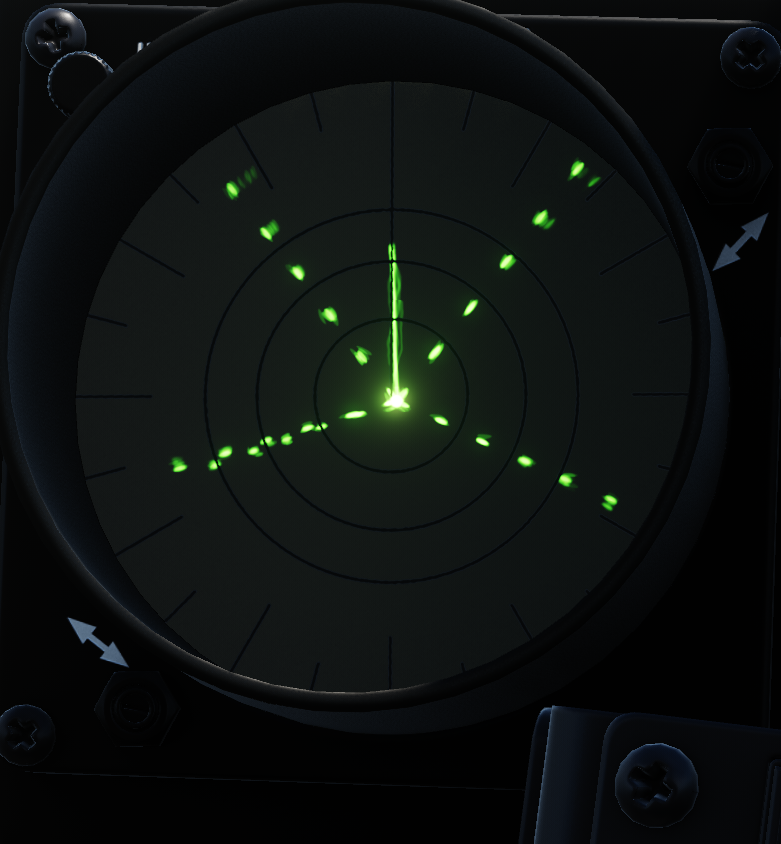
The azimuth indicator displays threats as lines on their relative azimuth to the aircraft. There are three line types corresponding to the three band types.
| Band | Line Type |
|---|---|
| India | Dashed |
| Golf | Dotted |
| Echo | Solid |
The top of the indicator corresponds to the front signals received from the front of the aircraft. The other directions left, right, bottom represent, left, right, aft respectively. There are etched markings at 15 degree intervals to give the pilot an indication of the exact relative azimuth of each incoming signal.
Unlike modern equipment the AN/APR-25 has no memory of incoming signals and thus signals are only displayed when they are being actively received through the antennas. When a signal is received the corresponding audio can be heard.
Built-In-Tests (BIT)
The AN/APR-25 has a series of built-in-tests to verify at any moment the equipment is functioning correctly. These tests check everything piece of equipment with the exception of the antennas. It does this by injecting signals into the pre-amplifiers.
India Band
Pressing and then releasing the I SAM button will begin the India Band test. The test starts with a short low PRF India signal and then high PRF signal for 3 seconds followed by a short low PRF India signal. For each part of the test the corresponding G SAM indication (HI or LO) should illuminate on the billboard.
During the test a flashing or solid X shape made of dashed lines (and accompanying audio) should be displayed with all 4 arms of the X being equal length reaching at least to the third ring of the display as shown below.
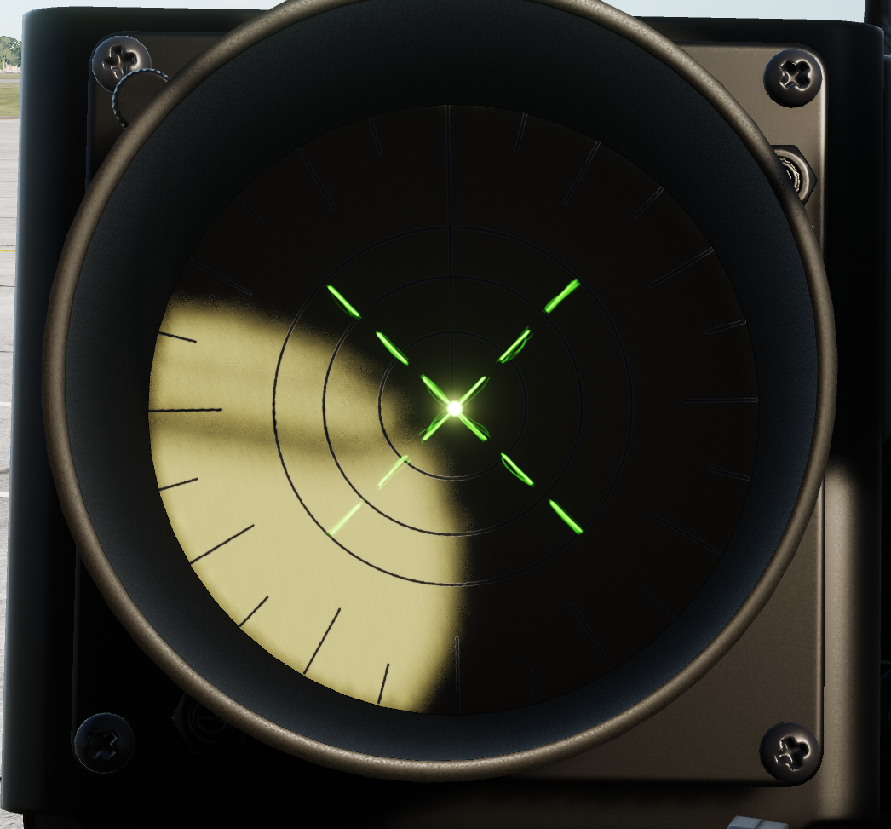
Golf Band
The Golf Band test has two different modes one for the regular Fan-Song E operation and one for the lobe-on-receive-only (LORO) operation of the Fan-Song E.
G SAM Test
Pressing and then releasing the G SAM button will begin the Golf Band test. The test starts with a short low PRF Golf signal and then high PRF signal for 3 seconds followed by a short low PRF Golf signal. For each part of the test the corresponding G SAM indication (HI or LO) should illuminate on the billboard.
During the test a flashing X shape made of pearl shaped dots (and accompanying rattlesnake audio) should be displayed with all 4 arms of the X being equal length reaching at least to the third ring of the display as shown below.
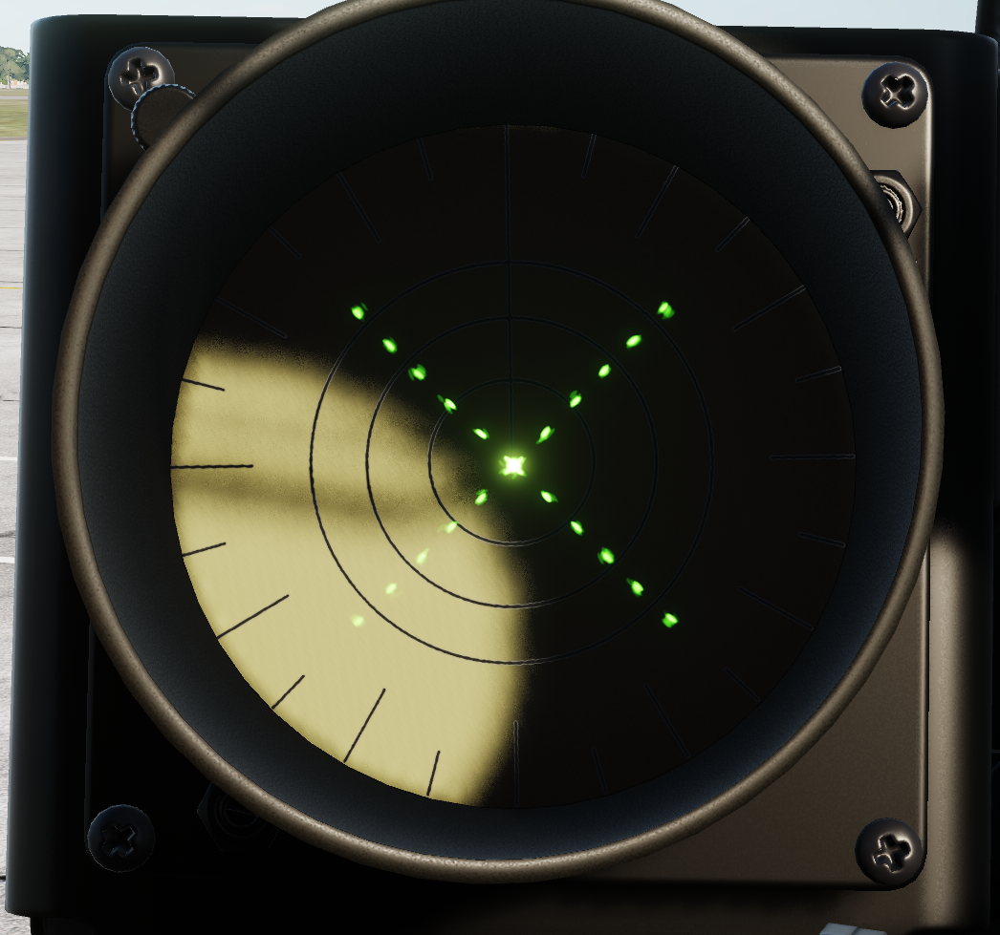
G LORO Test
Pressing and then releasing the G LORO button will begin the Golf Band test. The test will display a solid high PRF Golf Band signal (and steady accompanying audio) for about 3 seconds. For each part of the test the corresponding G SAM indication (HI) should illuminate on the billboard.
During the test a solid X shape made of pearl shaped dots (and accompanying rattlesnake audio) should be displayed with all 4 arms of the X being equal length reaching at least to the third ring the same as the G SAM Test.
Echo Band
Pressing and then releasing the E SAM button will begin the Echo Band test. The test starts with a short low PRF Echo signal and then high PRF signal for 3 seconds followed by a low PRF Echo signal for 3 seconds, however this signal should be blanked by the AAA defeat circuit which is automatically enabled during this test. For each part of the test the corresponding E SAM indication (HI or LO) should illuminate on the billboard.
During the first part of the a flashing X shape made of solid lines (and accompanying rattlesnake audio) should be displayed with all 4 arms of the X being equal length reaching at least to the third ring of the display as shown below. During the second part of the test no indications should be present on the azimuth indicator and no audio should be heard however the E SAM LO indication should illuminate.
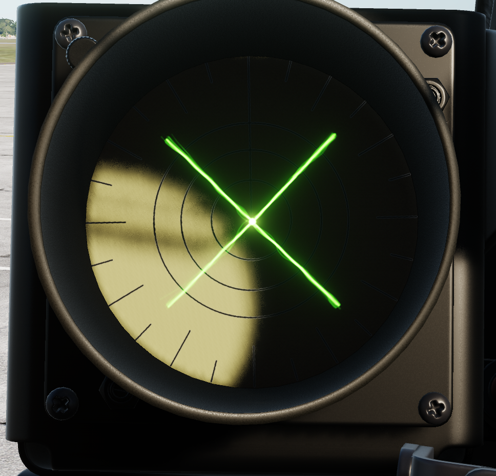